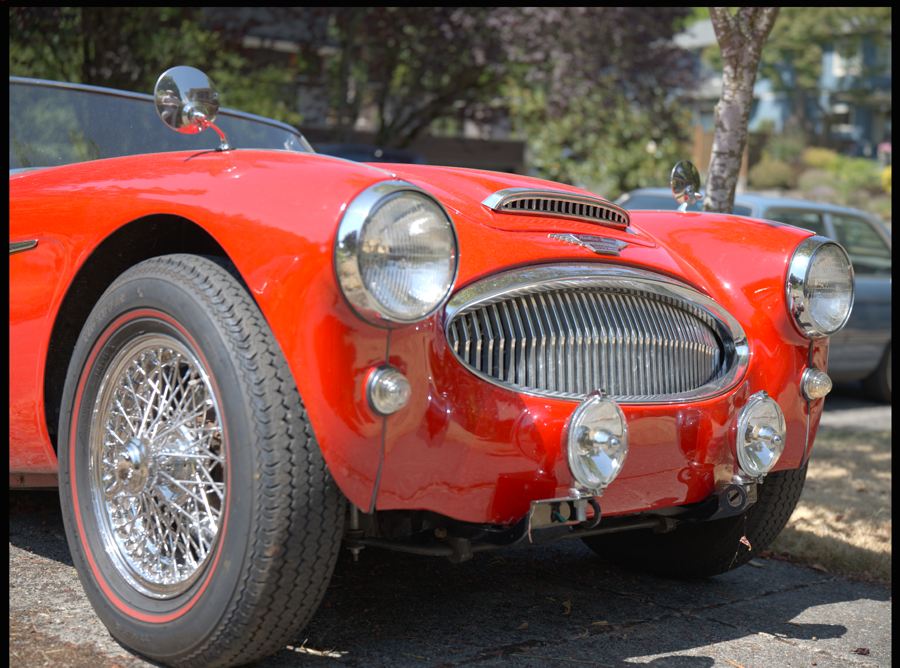
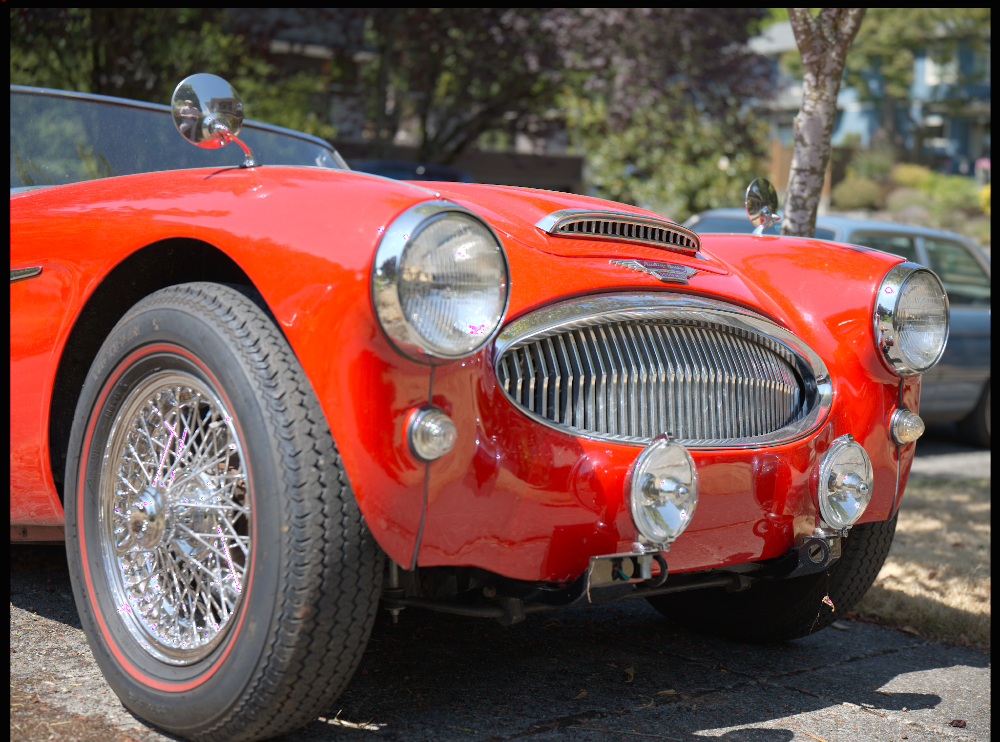
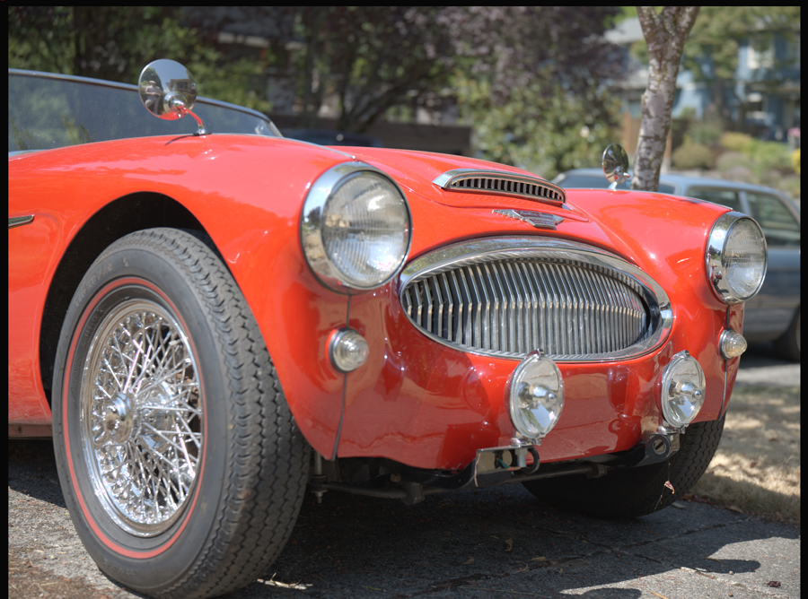
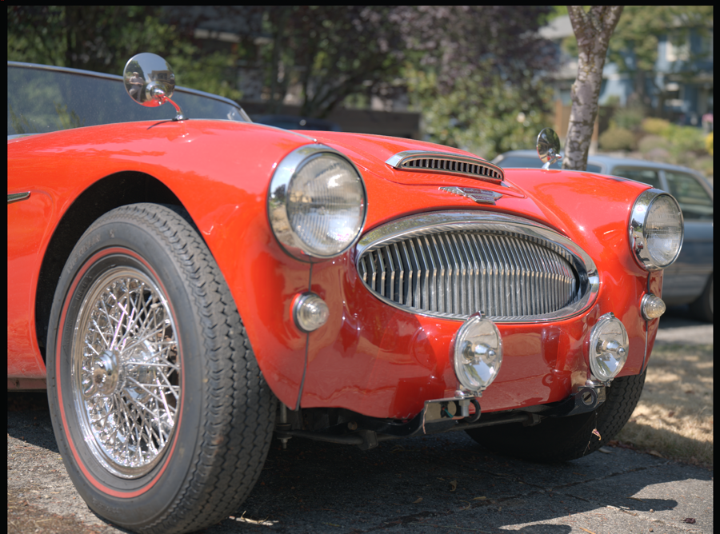
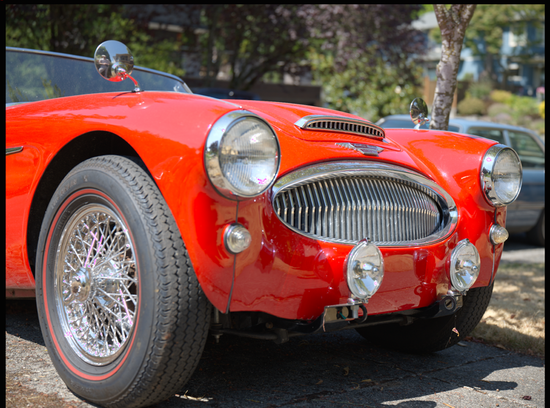

Retuned built-ins
| Look | Primary intent | Restraint applied |
|---|---|---|
| Standard Finish | Clean general starting point | Contrast 4, highlights −8, vibrance 5. |
| Nature | Texture and foliage separation | Texture 3, clarity 2, no preset dehaze; no oversized saturation push. |
| Portrait | Kind skin texture and highlight behavior | Texture −6, clarity −2, lower sharpening. |
| Product | Edge confidence and neutral surfaces | Texture 4, clarity 1; most emphasis placed in detail sharpening. |
| Vivid Color / Editorial Muted | Controlled color or publication feel | Adaptive chroma, gentler highlights, and no crushed replacement curve. |
| Film Warm / Film Cool | Subtle split-tone direction | Removed stacked point curves; smaller wheel saturation. |
| Golden Hour Radiance | Luminous warm highlights and open shadows | Retains color intensity rather than using the Muted film look; restrained grading and highlight control. |
| Neon Night | Selective neon color and controlled night-scene contrast | Small cyan/magenta adjustments; conservative detail enhancement without a broad saturation push. |
| Soft Neutral | Low-intervention editable base | Renamed from “Flat Proof”; no misleading display-proof claim. |
| B&W Fine Art | Structured monochrome | Moderate contrast/clarity with mixer-driven separation. |
| Highlight Recovery | Rescue an upper tail under pressure | Highlights −34, whites −10, small shadow lift. |
Conditional HDR behavior
Golden Hour Radiance and Neon Night apply their creative SDR recipe in either mode. Only when HDR is already enabled do they also adjust HDR highlight rolloff. Applying a preset never enables HDR or changes the output target, and disabled HDR settings remain untouched. Scene reference white and HDR headroom remain image-specific. Nature, Product, and Vivid Color retain their existing roles rather than gaining duplicate variants.
These new recipes are conservative starting points, not numerical settings verified from a video tutorial. The gallery below predates these additions; visual calibration on representative sunset and neon RAW files and an HDR display remains necessary.
Real-file recipe gallery
One saturated Hasselblad outdoor frame, identical scene exposure and white balance. The revised look curves stay anchored to the finished Standard base, so choosing a creative direction no longer causes an unrelated brightness collapse.





Saturated-color check

Profile versus preset
Adobe’s profile model is a rendering foundation; its amount can often be varied without moving the editing sliders. Capture One distinguishes a single-tool preset from a multi-tool style and supports layer opacity. ShopPhoto currently exposes a named base profile plus editable recipe controls. A future preset-amount control should interpolate effects around neutral rather than interpolate exposure.
Color-science notes
- The interface groups the creative collection under the plain-language label Creative Looks; “LUT” remains an implementation term rather than a suffix shown on every preset.
- Creative curves are variants of the finished Standard curve, not near-linear replacements; this avoids a surprise loss of midtone brightness.
- Vibrance and saturation-aware LUT scaling protect already-saturated colors better than a broad saturation push.
- Color wheels establish direction with small chroma. Strong shadows-plus-highlights grading quickly contaminates neutrals.
- Texture, clarity, and dehaze overlap perceptually. Most looks now emphasize one and leave the others small.
- A creative LUT is not a camera characterization. Camera/DCP transforms belong earlier in the pipeline.